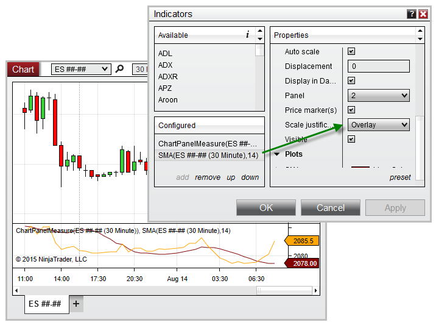

|
<< Click to Display Table of Contents >> IsYAxisDisplayedOverlay |


|
IsYAxisDisplayedOverlay
|
<< Click to Display Table of Contents >> IsYAxisDisplayedOverlay |
|
Indicates any objects configured in the panel are using the Overlay scale justification.
A bool indicating any objects use the Overlay scale justification
ChartPanel.IsYAxisDisplayedOverlay
protected override void OnRender(ChartControl chartControl, ChartScale chartScale) |
Based on the image below, IsYAxisDisplayedOverlay is set to True, since the SMA indicator is using the Overlay scale justification.
